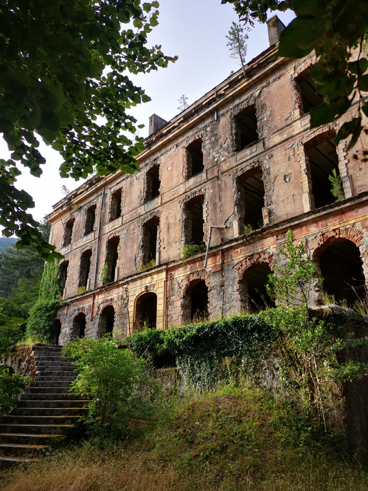

Day three
I woke up at dawn, my mind still weary and my lungs taking deep sips of the crisp morning air. After a sip of water and a desultory stretch, I set about gathering my few belongings. The Col de Lapato was situated roughly midway between the refuges of Usciolu and Prati, at the crossroads of Corsica’s two major trails, the Mare a Mare and the GR 20. I doubted that any hiker’s tread would disturb me at such an early hour and, to tell the truth, I felt quite equanimous about being discovered, even though there would have been something almost comic if such an encounter had occurred – the ragged remains of what had once been called a tent, its fabric now wide open for everyone to see. I folded it with brisk indifference, for it had utterly failed even in the kindest weather. I now hoped to find a place to get rid of it as quickly as possible, lightening my load a little further. Within minutes, everything was once again compressed into my rucksack and I was ready to continue my journey. My hesitation over whether to carry on or instead resume via the Mare a Mare had now fully vanished. I did want to discover the northern peaks of the island, climb the Monte Cinto and spend a night in the small village of Vizzavona. There would be another time for Corsica’s architecture and cultural heritage. I was lucky to have had a generous night’s sleep and was poised to press on towards the summit of Punta della Cappella before descending towards the Refuge de Prati. Before long, the forest fell away and I found myself walking along the ridge through open, rocky grassland. The pine’s warm fragrance gave way to the thin and austere mountain air, while a slight breeze caressed its flanks.
A few houses could be spotted to the east, and I could observe people having a leisurely breakfast in the distance, sitting outside on their terraces and enjoying the relative coolness of the morning hours. It didn’t take me long to reach Punta della Cappella, and once upon its summit, the Refuge de Prati appeared, with its rectangular main building constructed from stone and its wide southern wooden balcony resting on wooden beams, beneath which large transportation FIBC bags were stored. A sea of white tents lay south on the flat plain, and it was apparent that many hikers were about to set off, as the area was already buzzing with activity. The path led me down, and I soon reached the area. I made a brief stop on the terrace and was keen to have a coffee. The staff, however, seemed rather occupied with preparations and cleaning – and, with me now being one of the few hikers remaining at the refuge, I did not feel like asking. I decided instead to content myself with the water I had just filled up. It was quiet outside, and only the gentle humming of a vacuum cleaner pierced the air. No birdsong and no wind disturbed the fragile silence. And unlike the Alps, there are no marmots in Corsica, which could have added their distinctive vocal signature. I then walked down to the storage area beneath the terrace. One of the bags was filled with a messy amalgam of discarded items, and I retrieved my folded, broken tent from my rucksack and tossed it away with a sense of relief.

The trail resumed north before taking a sharp turn west, where I soon disappeared once again into dense forest. Temperatures rose quickly, but thanks to the shade provided by the trees, the heat didn’t seem to pose a problem. On my way down, I crossed paths with two people leading a handful of mules loaded with beverages and provisions, walking in the opposite direction. I assumed them to be en route for the Refuge de Prati. I quickly fathomed that they would also be taking the trash down and soon felt guilty for having discarded my tent up there, not wanting to load them unnecessarily with the result of my poor decision. The path soon reached the Relais San Petru di Verdi, located next to the asphalted D69 road, which crosses here the high point of Col de Verde.>.
In that moment I was glad to be on foot, imagining how different the sensations would have been had I traversed Corsica by other means. For walking remains, to me, the most immersive way of experiencing the mountains. Yet, with time being the limiting factor, one must figure out how much intensity to devote to a place, for not every site warrants the same degree of attention. Inevitably, the time we give to one thing will be missing from another. And more fundamentally, every single person sees the world within the frame of their own singularity. Precisely the dilemma I was struggling with the day before, being aware that if I chose to solely walk down this path, I would have an apprehension of what Corsica is within the limitations set by the GR 20 as well as my own. Thus, one must ultimately content himself with the glimpses he can gather, filling the gaps through the accounts of others. Such were my thoughts as I reached the road before I threaded on the other side, pressing further north towards Col de la Flasca.
The GR 20 followed a flat and wide hard-packed dirt road, and from the nearby camping site people were preparing themselves for a walk. A while later, I took right off the road for a small rocky trail heading up, and on it I happened to overtake a handful of people. I assumed that many were only out for the day, as they did not carry heavy backpacks. The path eventually descended on the other side after reaching the mountain pass, and I could now hear a torrent rushing down the narrow valley. It was a pleasant change walking along a river dell instead along a mountain ridge, and I wasn’t bothered by the vivid activity on the track as I spent yesterday’s evening and morning mostly on my own. The crossing of the wooden bridge over the roaring torrent was mesmerizing, with a beautiful view over the lush canopy of trees perched on both sides and the mountains looming in the distance. The trail now headed back up in a zigzag, and feeling energized and once again curious to know what lay ahead, I couldn’t help but run until the forest cleared up once more and I soon found myself on the Plateau de Ghjalgone.
That is when I met Émilie. She was slim, around 1.70 metres tall, had brown hair, wore simple hiking clothes and carried a 45-litre backpack on her shoulders. She was thirty years old and from the south of France, but now living in Colchester, near London. She had a warm smile and her face was marked by a pair of almond-shaped eyes. I do not recall how the interaction started, but I do remember that it was her who approached me first. We were both near the abandoned bergerie of Ghjalgone, and perhaps it was us filling our bottles at the stream that gave us the opportunity to start a conversation. We then both ventured on, with her at the front. I remember her asking me whether I wanted to overtake her, as I was right behind, and I must admit, I was rather shy in that moment and quickly accepted the offer. Just when I wanted to press on, I hesitated. I felt like a fool as this was the occasion to perhaps share the experience with someone else. Here again, I have no memory of the first words I used, but it most likely was a question about her motives for doing the GR 20.
She told me about her reasons. It became clear that her decision had come at a time of considerable change in her life. She described it as a spiritual journey, an opportunity to reflect within the quiet shelter of nature. She had recently gone through a breakup with her partner and, being French, she was well informed about the GR 20. She wanted to complete it in the hope that its hardships and its raw natural beauty might provide some answers. I listened intently, and perhaps because I was so absorbed in our conversation, my memories of the trail and the landscapes we crossed that day remain vague, my attention being elsewhere as I contented myself with walking behind her, letting her lead the way.
At some point she asked me where I had started that morning. I told her that I had begun at the Col de Lapato and explained to her that it was located roughly midway between the Refuge d’Usciolu and the Refuge de Prati. She looked surprised. “Wait, you started before the Refuge de Prati?” she asked. She had set off from there that morning, and it was only midday, yet I had already caught up with her. “And if you didn’t sleep in a refuge, where did you spend the night?” I told her about my tent, how I ended up cutting the fabric as it was bluntly apparent that it didn’t work. Yet I did add that I had a good night’s sleep, even though all this might appear quite catastrophic from someone else’s perspective. “And why did you want to do the GR 20?” So I told her about my spontaneous decision in a moment of boredom and told her about my night in Ajaccio, the fact that I didn’t have a phone with me, as well as my night in the workshop at the village of Bavella. It was only now by recounting my trip that I realized how abnormal this all appeared. “You didn’t really plan any of this, did you?” On that, I could only grin. Depending on how you define planning, I may or may not have done that. “So you started at four in the afternoon, two days ago, in Conca? That’s really fast.” “Yeah, I suppose it is,” I replied. But I wasn’t trying to prove anything. I was simply going with the pace that I enjoyed most. As we carried on, I was glad that we were walking along the main route of the GR 20 rather than the alternative, which went over Monte Renoso and would have surely been beautiful, with its mountain lakes and views the valley. But I needed a change that day and, after the path that had led me over the torrent earlier this morning, I felt like pursuing the experience. The path threaded along the eastern flank of Monte Renoso, crossing mostly forest. As we approached the final stretch towards the Refuge de Capannelle, the path became significantly steeper, whereas until then it had mostly followed a gentle succession of ups and downs. She walked ahead and I stayed right behind, and we remained silent. I did not want to talk, as I could sense that she was concentrating on the rocky and uneven path ahead, and I could hear her breathing becoming heavier. That was when she asked me, “Is this actually even hard for you?” I took some time to respond, as I did not want to come across as disrespectful. The truth was that, for me, it was indeed very easy, and I could have gone much faster. But I did not want to put any pressure on her; that was not the point. So I ended up telling her, “Not really.” “Well, you can go in front if you want, and I’ll catch up,” she responded. “No, it doesn’t matter. I don’t need to go fast. It is easy, but I don’t need to press on. Take the time you need. That’s why I’m walking behind you. This way I can simply walk your pace. I just normally happen to run those kinds of trails, so walking is not really a challenge to me.” She did not reply, but I do hope she took it the right way. This was no competition. I had simply decided to walk with her because I enjoyed the company. It wasn't long before we reached the Refuge de Capannelle. A spacious terrace, shaded by umbrellas and an imposing tree, overlooked the surrounding mountains, and we decided to take a seat. Many hikers were tucking into pizzas, and just as I was about to order one myself, I was told they only served them until four o'clock — precisely the time we'd arrived. "That's why I told you not to wait for me," Émilie said jokingly. "You missed the pizza because of me." I smiled back and asked whether she'd also like a beer. With Vizzavona not far away, I'd just have to wait a little longer for a warm dinner. Émilie seemed a bit surprised by my remark — for her, there was no need to press on. She had a reservation for a hotel room at the village but only for the following night. She'd expected to sleep at the Refuge de Capannelle and hadn't imagined walking any further. I, on the other hand, couldn't imagine staying. The afternoon still felt young to me, and ending the day at four o'clock would have seemed strangely early, given the rhythm I'd settled into since the start of the hike. We lingered at one of the tables under the tree, relishing the chance to go barefoot, chatting with a few other walkers, and simply soaking in the pleasant atmosphere the place offered. It was a beautiful two-story building, bigger than the previous refuges I'd crossed so far. The lower level, built from stone, opened onto the wide terrace where we sat, while the upper floor was clad in horizontal wooden planks — I assumed the dorms were up there. Just like at the previous refuges, white tents had been pitched around it. Before leaving, I noticed a few people had left their pizza crusts untouched. I walked over and asked whether they planned to eat them, or whether I could have them instead. They looked at me with some surprise before smiling and telling me to help myself. It may have seemed a little odd, but I didn't mind in the slightest — after all, I now got to enjoy a small taste of the pizza I'd been hoping for. After a well-earned rest and finishing our beer, we resumed our walk, Émilie having decided to join me. The path followed once more a gentle succession of ups and downs along the eastern flank of Monte Renoso. The mountain stretched in a long, graceful arc from south to north, with a slight bend toward the east, its ridgeline eventually disappearing as we turned left, descending into the valley on the other side. Most of the path remained sheltered beneath the forest canopy, and from time to time we passed abandoned bergeries, their rough stone walls and weathered wooden beams standing as quiet reminders of a once more pastoral way of life. Eventually we reached the junction where the GR 20 split in two. One branch remained high in the mountains, following the alternative route, while the other descended towards Vizzavona. Neither of us hesitated. We continued downhill, wanting to spend the evening in the village. The trail soon joined a broad forest road that led us down in a gentle zigzag. After the rugged mountain paths of the previous days, the walking felt almost effortless. We could already hear the sound of passing cars in the distance and the occasional chainsaw at work. "This is a little boring now," Émilie remarked with a smile. I agreed. We had both begun to look forward to reaching the village. Shortly before arriving, the whistle of a train pierced the air. I was surprised, having completely forgotten about the railway station crossing through this remote valley. Being a train enthusiast, I insisted on walking over to the station as soon as we arrived. Standing beside the platform, Émilie laughed and took a photograph of me as I squatted down with my rucksack on the floor, grinning towards the camera. "Well," she said, "you've made it. You've already completed the southern half of the GR 20 in merely two days. Congratulations." While we stood there, we met two hikers at the platform looking at the timetable. After a short talk with them, we learned they had decided to end their journey in Vizzavona, tired and struggling with knee pain, intending to return another year to complete the remaining half of the trail. It was something I had not really considered before. Many hikers did not walk the GR 20 in a single attempt but divided it into two, returning another year to finish what they had begun. I had also forgotten that many people had to deal with sore knees as the GR 20 forced them to walk continuously up and down for several days. I had no poles with me and was spared of such discomfort. I silently expressed gratitude for having such great health and capable body and hoped that it would last for many more years. It was seven o'clock, and we decided to have dinner at a nearby restaurant, situated close to the railway station. The pleasant terrace featured numerous tables spread beneath large umbrellas and shading chestnut trees, all set upon a simple grey slab floor. It reminded me of the beer gardens in Germany. A spacious car park lay beside it, though it hardly disturbed the atmosphere. If anything did, it was the occasional mosquito interrupting our stay outside. We both ordered a hearty burger with French fries, accompanied, naturally, by another Pietra. It was my first proper restaurant meal since arriving in Corsica. We lingered long after we had finished eating, watching the evening slowly settle over Vizzavona. The warmth of the day gradually gave way to the coolness of the approaching night, though not as stark as we were no longer high up in the mountains. The rhythmic chirping of cicadas filled the air, and we both enjoyed our beer while sharing personal insights about our lives — me in Germany, her in England. At one point, Émilie looked at me and asked, "Do you have any idea where we're going to spend the night?" "No," I replied with a smile. "I have absolutely no idea. But does it really matter?" She smiled back. "No. I think we'll find something." Her response, and her relaxed attitude, surprised me. It's a rare quality these days, and I hadn't expected it from her, not after she'd told me about the room she'd booked in Vizzavona for the following night. Yet here she was, perfectly content to let the evening unfold without knowing where we would sleep. We remained at the restaurant until the staff eventually began clearing the tables, gently reminding us it was time to move on. When we asked whether we could pay, we were directed to the shop on the other side of the building. It was a beautiful little store, selling not only refined local products but also practical provisions for the many hikers passing through. I took the opportunity to buy some bread, saucisson, cheese, a bit of fruit, and two Oranginas for the days ahead. Inside, we met an older couple. Since they were speaking German, I naturally exchanged a few words with them. The man asked whether Émilie and I were hiking together. I told him that we had only met today. At that, he grinned and made a remark along the lines of, "Well, enjoy the night," clearly implying something beyond just sleeping. I immediately felt uncomfortable, mostly hoping Émilie hadn't heard it, or hadn't interpreted it the same way. The last thing I wanted was for her to think I'd joined her company with any intention beyond enjoying the walk and sharing the experience. I gave a short reply and moved on, hoping she hadn't followed the exchange, since it was in German. After that, we finally left the restaurant behind and went out to look for a place to spend the night. We walked along the road heading towards the camping areas and passed the remains of the old Grand Hôtel de la Forêt de Vizzavona. Once a prestigious mountain retreat built during the golden age of Corsica’s early tourism, it had welcomed wealthy European visitors, including many wealthy English guests, who came to enjoy the cooler mountain climate. Now, however, the building stood abandoned and in a desolate state. The elegant architecture of the nineteenth century was still visible, but nature had slowly begun reclaiming the place. The windows were empty, the walls weathered, and the silence surrounding it made it difficult to imagine the conversations, dinners, and evenings that must once have taken place there. As we walked past, we noticed a gap in the fence. A sign clearly stated "Défense d’entrer" — no trespassing. We saw it, but neither of us hesitated. We stepped through the opening and entered the abandoned grounds. It quickly became clear why access was forbidden. The building was in a deteriorated state, with large holes along the stairs that once would have led the guests towards the main entrance. We carefully climbed up and passed through one of the round arches that once must have held beautiful French doors. We entered a large room with a high ceiling and a large chimney. I could almost imagine the scene that must have unfolded back then: wealthy English aristocrats sitting there on cold evenings in front of a warm fire, warming themselves after a day in the nearby mountains, sharing stories over drinks while looking out through the windows towards the valley below. Pleased with the place, we soon unpacked our gear for the night. I put the few pieces of clothing that still needed drying to the side, arranged my equipment, and unfolded my sleeping mattress and bag next to Émilie.span> At some point during the night, we were briefly disturbed by another unexpected visitor. An older man entered the building, apparently looking for the same thing we were. He did not notice us as he entered the room next to ours and settled there for the night. Before falling asleep, Émilie asked me about my plans for the following day. "I’m going to continue," I told her. "I’ll wake up around seven and see how far I get." I explained that I had heard about the famous Lasagne one could eat at the Refuge de l'Onda, several hikers having recommended during my break at the Refuge d’Asinau two days earlier. "And you?" I asked. She explained that she wanted to stay. Since she had a reservation at a hotel and an entire day without any obligation, she planned to walk to the Cascade des Anglais, resting there, reflecting, and then returning to Vizzavona for a proper night, with the luxury of a warm shower waiting for her. I smiled. It sounded like a good plan.Before going to sleep we both wished each other good luck and, before closing our eyes,looked outside through the large empty windows of the abandoned hotel. The night sky stretched above us, and I even saw a shooting star before drifting away.
